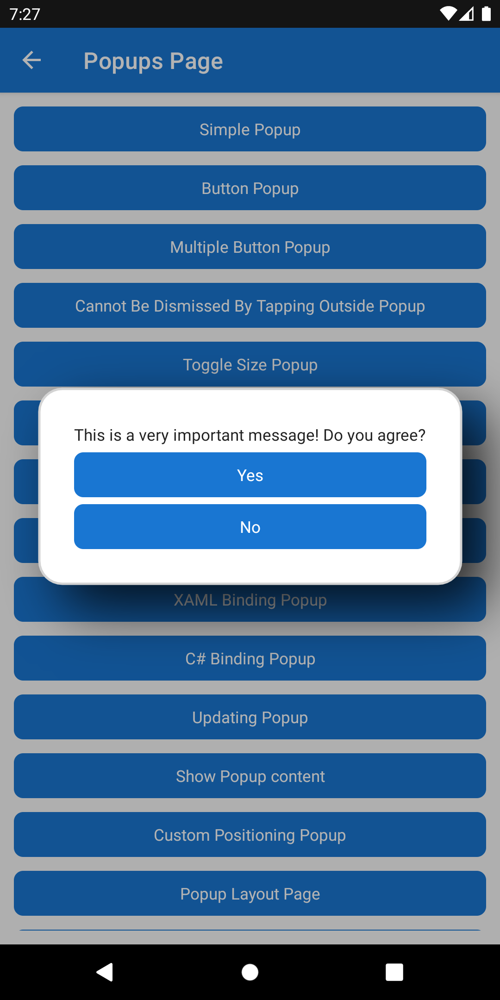

Returning a value from a Popup
The .NET MAUI Community Toolkit provides the ability to show a Popup to a user. The Toolkit also enables a common, more complex, scenario where a developer displays a Popup and awaits its result to be returned when that Popup is dismissed. This page covers how the Popup<T> class can be used to achieve the desired behavior.
Building a Popup
A Popup<T> can be created in XAML or C# as follows:
Building a Popup in XAML
The following section covers how to create a Popup<T> using XAML.
Defining your Popup
The easiest way to create a Popup<T> is to add a new .NET MAUI ContentView (XAML) to your project, this will create 2 files; a *.xaml file and a *.xaml.cs file. The contents of each file can be replaced with the following:
XAML File
<toolkit:Popup
xmlns="http://schemas.microsoft.com/dotnet/2021/maui"
xmlns:x="http://schemas.microsoft.com/winfx/2009/xaml"
xmlns:system="clr-namespace:System;assembly=mscorlib"
xmlns:toolkit="http://schemas.microsoft.com/dotnet/2022/maui/toolkit"
Padding="10"
x:TypeArguments="system:Boolean"
x:Class="MyProject.ReturnResultPopup">
<VerticalStackLayout Spacing="6">
<Label Text="This is a very important message! Do you agree?" />
<Button Text="Yes"
Clicked="OnYesButtonClicked" />
<Button Text="No"
Clicked="OnNoButtonClicked" />
</VerticalStackLayout>
</toolkit:Popup>
The use of x:TypeArguments in XAML makes it possible to supply the type parameter for a generic type.
XAML Code-Behind File
public partial class ReturnResultPopup : Popup<bool>
{
public ReturnResultPopup()
{
InitializeComponent();
}
async void OnYesButtonClicked(object? sender, EventArgs e)
{
await CloseAsync(true);
}
async void OnNoButtonClicked(object? sender, EventArgs e)
{
await CloseAsync(false);
}
}
The use of Popup<bool> must match the definition in the XAML through the use of x:TypeArguments.
Important
If the code behind file is not created along with the call to InitializeComponent, then an exception will be thrown when trying to display your Popup.
Building a Popup in C#
The following section covers how to create a Popup using C#.
using CommunityToolkit.Maui.Views;
namespace MyProject;
public class ReturnResultPopup : Popup<bool>
{
public ReturnResultPopup()
{
var yesButton = new Button { Text = "Yes" };
yesButton.Clicked += OnYesButtonClicked;
var noButton = new Button { Text = "No" };
noButton.Clicked += OnNoButtonClicked;
Content = new VerticalStackLayout
{
Children =
{
new Label { Text = "This is a very important message! Do you agree?" },
yesButton,
noButton
}
};
}
async void OnYesButtonClicked(object? sender, EventArgs e)
{
await CloseAsync(true);
}
async void OnNoButtonClicked(object? sender, EventArgs e)
{
await CloseAsync(false);
}
}
The CloseAsync method allows for a value to be supplied, this will be the resulting return value. The use of generics in Popup<T> provides type-safety when returning values from a Popup.
Awaiting the result from a Popup
In order to await the result, the ShowPopupAsync method must be used as follows:
using CommunityToolkit.Maui.Views;
public class MyPage : ContentPage
{
public async Task DisplayPopup()
{
var popup = new ReturnResultPopup();
// The type parameter must match the type returned from the popup.
IPopupResult<bool> popupResult = await this.ShowPopupAsync<bool>(popup, PopupOptions.Empty, CancellationToken.None);
if (popupResult.WasDismissedByTappingOutsideOfPopup)
{
return;
}
if (popupResult.Result is true)
{
// Yes was tapped
}
else
{
// No was tapped
}
}
}

Note
If WasDismissedByTappingOutsideOfPopup is true, then the Result property will always be null or default.
PopupOptions
The PopupOptions class provides the ability to customize the Border, Shadow, PageOverlayColor, and more, of the displayed Popup.
Please refer to the PopupOptions Documentation to learn more.
Examples
You can find an example of this feature in action in the .NET MAUI Community Toolkit Sample Application.
API
You can find the source code for Popup over on the .NET MAUI Community Toolkit GitHub repository.